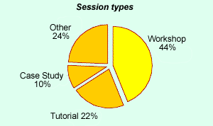
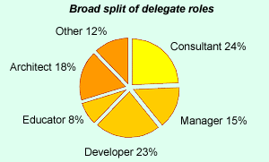

Convince your boss
If you'd like to come to SPA2007, but you need to convince your boss that it will be a worthwhile event, then this information might help.
What subjects does the conference programme cover?
The conference programme each year features around 40 sessions that have been selected from a far greater number of submissions. With such a wealth of high quality material to choose from, we're able to put together a programme that covers a broad range of subjects. This year is no exception with sessions covering many aspects of agile development, software architecture and design, working in distributed teams and many other topics.For full details take a look at this year's programme.
We try to encourage session leaders to run sessions that are interactive, so you won't find many sessions where you just sit and listen! Over the years, experience and feedback from our delegates has shown that the unique style of our conference makes for a very productive learning environment.

Who attends the SPA conferences?
This graph shows the breakdown of job roles for the delegates who have attended recent conferences. Some delegates often perform a number of roles, so for the purposes of this illustration, we've taken what they consider to be their primary role. As you can see, our delegates covered a wide range of roles. This diversity really helps to make the conference interesting because you get to exchange ideas and experience with people with different perspectives.

Our conference attracts world class speakers.
Each year our programme has sessions led by some of the leading names in software practice from the UK and abroad. Some of these names will be very familiar to you. Others you will know through their published work. Here are just some of the names that have appeared at our conference in recent years.
| Norman Kerth | Ivar Jacobson | Martin Fowler | Joshua Bloch |
| Alistair Cockburn | Dave Thomas | Michael Jackson | Dick Gabriel |
| Kent Beck | Kevin Tyson |